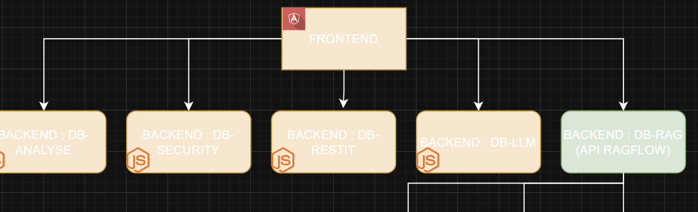
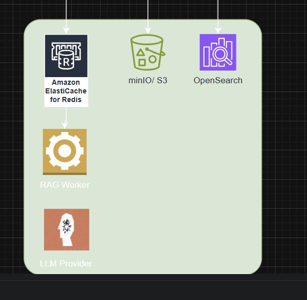
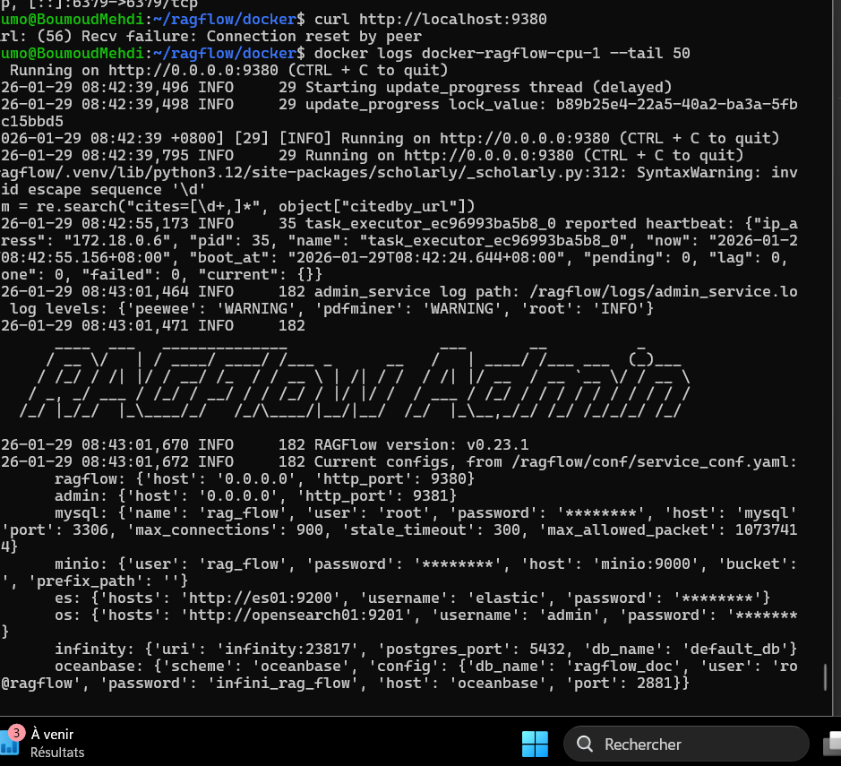
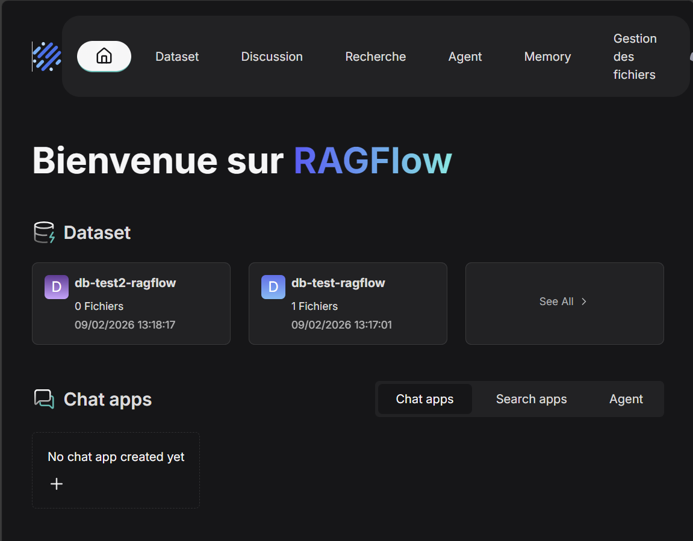

Dans le cadre de ma formation en BTS SIO option SLAM, j’ai travaillé sur la mise en place d’un outil RAG appelé RagFlow, permettant d’analyser et de comprendre des documents PDF grâce à l’intelligence artificielle.
L’objectif était de créer un système capable de répondre à des questions en s’appuyant sur des documents, afin de mieux comprendre le fonctionnement des systèmes d’IA modernes.
Le système RAG (Retrieval-Augmented Generation) permet de combiner la recherche d’informations dans des documents et la génération de réponses avec une intelligence artificielle.
L’embedding permet de transformer les documents en vecteurs afin de faciliter la recherche d’informations pertinentes dans une base vectorielle.
J’ai testé le chatbot avec différentes questions. Le système recherchait les informations dans les documents puis générait une réponse. Cela m’a permis d’évaluer la pertinence et les limites des réponses.




Ce projet m’a permis de comprendre concrètement le fonctionnement d’un système d’intelligence artificielle moderne et l’importance de la qualité des données pour obtenir des réponses pertinentes.